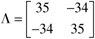

| [ Team LiB ] |
|
M13.4 RGA AnalysisThe RGA (Chapter 13) for this system is  This RGA indicates that the xD-L (distillate composition-reflux flow) and xB-V (bottoms composition-reboiler vapor flow) input-output pairings are the only possible pairings, since pairing on a negative relative gain would lead to a failure-sensitive system. It also indicates that this system is sensitive to model uncertainty and that significant tuning parameter changes must be made (typically, the magnitude of the proportional gains must be increased) so that both loops can be closed simultaneously with good performance. Very often, with high relative gain systems, tuning parameters that work well with both loops closed will be unstable if one of the loops is opened (either by an operator or by the failure or saturation of a valve). With high relative gain systems, one must often decide to simply keep one loop under control and sacrifice the control of the less important output variable. |
| [ Team LiB ] |
|